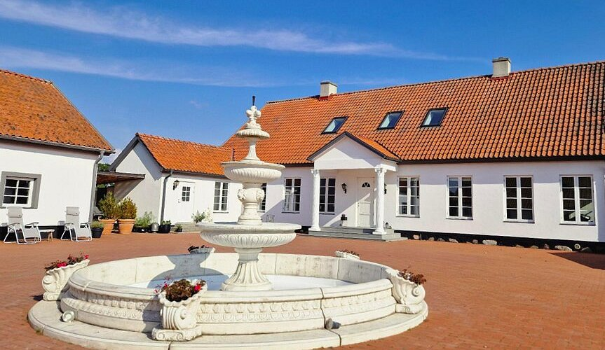
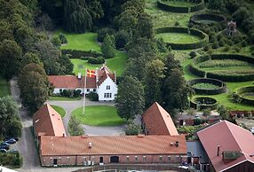
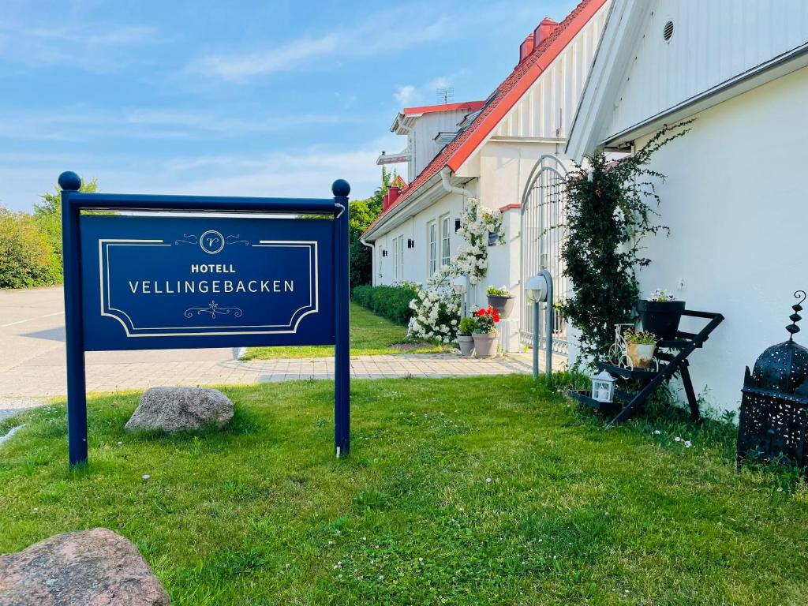
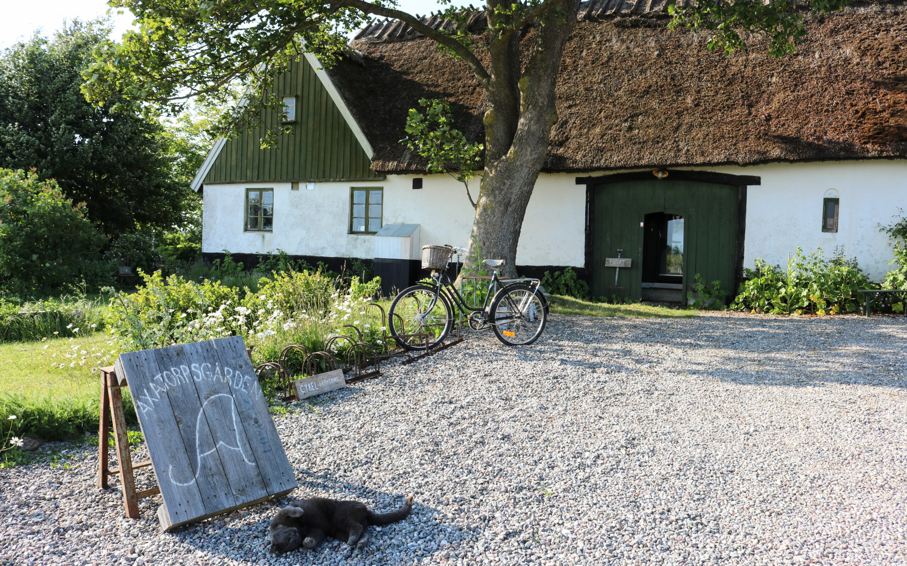

Boende
Om ni vill övernatta i närheten så finns det en del olika hotell att välja mellan.

Fontänens Bed & Breakfast
Att köra från Stallgården till Fontänens Bed & Breakfast tar ungefär 13 minuter (cirka 11 km).
Adress: Landsvägen 1477, 231 95 Trelleborg
Boka rum här

Ängavallen
Att köra från Stallgården till Ängavallen tar ungefär 8 minuter (cirka 5 km).
Adress: Ängavallensväg 17, 9, 235 91 Vellinge
Boka rum här

Hotell Vellingebacken
Att köra från Stallgården till Hotell Vellingebacken, tar ungefär 7 minuter (cirka 7 km).
Adress: Vellingebacken 40, 235 91 Vellinge
Boka rum här

Axatorpsgården
Att köra från Stallgården till Axatorpsgården tar ungefär 10 minuter (cirka 7 km).
Adress: Hammarlövs Byaväg 21-55, 231 94 Trelleborg
Boka rum här